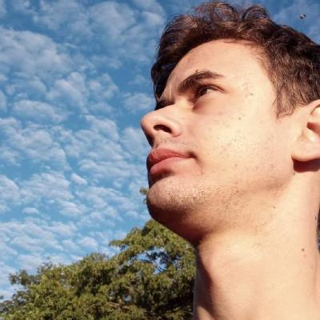

Sobre Mim
Olá! Sou Gabriel Bueno, estudante de Engenharia de Software e entusiasta da tecnologia. Apaixonado por programação, automação e soluções digitais, dedico meu tempo à criação de projetos inovadores que possam impactar positivamente a vida das pessoas.
Meu interesse pelo desenvolvimento de software vai desde sistemas robustos e escaláveis até interfaces intuitivas e amigáveis. Busco constantemente novos desafios que permitam aprender e evoluir minhas habilidades técnicas e criativas.
Além do universo tecnológico, tenho interesse por idiomas, jogos, rpg de mesa, cinema e livros. Estou sempre aberto a novas conexões e oportunidades que estimulem crescimento pessoal e profissional.
Se você compartilha dessa paixão por inovação e tecnologia, sinta-se à vontade para entrar em contato! estudante de Engenharia de Software e apaixonado por tecnologia.